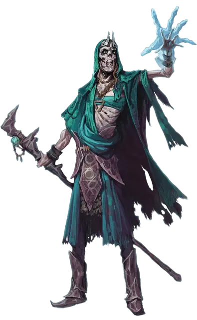

Дэтлок Манипулятор
Deathlock Mastermind
Средняя Нежить, нейтрально-злая

Класс Доспеха 13 (16 с магическим доспехом)
Хиты 110 (20к8 + 20)
Скорость 30 футов
| мод | спас | ||
|---|---|---|---|
| СИЛ | 11 | +0 | +0 |
| ЛОВ | 16 | +3 | +3 |
| ТЕЛ | 12 | +1 | +1 |
| мод | спас | ||
|---|---|---|---|
| ИНТ | 15 | +2 | +5 |
| МДР | 12 | +1 | +1 |
| ХАР | 17 | +3 | +6 |
Навыки Восприятие +4, История +5, Магия +5
Сопротивление урону некротическая энергия; дробящий, колющий, рубящий от немагических атак, кроме нанесённых посеребрённым оружием
Иммунитет к урону яд
Иммунитет к состояниям отравление, истощение
Чувства тёмное зрение 120 футов (включая магическую тьму), пассивное Восприятие 14
Опасность 8 (3900 опыта)
Бонус мастерства +3
Среда обитания Город
Особенности
Языки:. Языки, которые знал при жизни
Врождённое колдовство. Врождённое колдовство дэтлока основывается на Харизме (Сл спасброска от заклинания 14). Он может неограниченно колдовать следующими заклинаниями без необходимости материальных компонентов:
• Неограниченно: обнаружение магии [detect magic], маскировка [disguise self], доспехи мага [mage armor]
Использование заклинаний. Дэтлок является заклинателем 10-го уровня. Его базовой характеристикой является Харизма (Сл спасброска от заклинаний 14, +6 к попаданию атаками заклинаниями). Он восстанавливает потраченные ячейки заклинаний после завершения короткого или продолжительного отдыха. Он знает следующие заклинания колдуна.
• Заговоры (неограниченно): леденящее прикосновение [chill touch], волшебная рука [mage hand], малая иллюзия [minor illusion], ядовитые брызги [poison spray];
• 1-5 уровень (2 ячейки 5 уровня): руки Хадара [arms of Hadar], усыхание [blight], контрзаклинание [counterspell], корона безумия [crown of madness], тьма [darkness], переносящая дверь [dimension door], рассеивание магии [dispel magic], полёт [fly], удержание чудовища [hold monster], невидимость [invisibility];
Сопротивление изгнанию. Дэтлок совершает с преимуществом спасброски от всех эффектов, изгоняющих нежить.
Вы можете изменить дэтлока, заменив одно или несколько из всех его заклинания на характерные для его покровителя. Ниже приведены примеры.
Покровитель архифея:. воображаемая сила [phantasmal force], высшая невидимость [greater invisibility], гипнотический узор [hypnotic pattern], голод Хадара [hunger of Hadar], мерцание [blink], огонь фей [faerie fire], подчинение зверя [dominate beast],подчинение личности [dominate person], притворство [seeming], усыпление [sleep];
Покровитель исчадие:. адское возмездие [hellish rebuke], глухота/слепота [blindness/deafness], зловонное облако [stinking cloud], небесный огонь [flame strike], огненная стена [wall of fire], огненные ладони [burning hands], огненный шар [fireball], огненный щит [fire shield], палящий луч [scorching ray], приказ [command];
Покровитель Великий Древний:. воображаемая сила [phantasmal force], голод Хадара [hunger of Hadar], диссонирующий шёпот [dissonant whisper], жуткий смех Таши [tasha’s hideous laughter], обнаружение мыслей [detect thoughts], подсматривание [clairvoyance], подчинение личности [dominate person],послание [sending], телекинез [telekinesis], эвардовы чёрные щупальца [evard’s black tentackles];
Действия
Смертельные Когти. Рукопашная атака оружием: +6 к попаданию, досягаемость 5 футов, одна цель. Попадание: 13 (3к6 + 3) урона некротической энергией.
Гиблые снаряды. Дальнобойная атака заклинанием: +6 к попаданию, дистанция 120 футов, одна или две цели. Попадание: 18 (4к8) урона некротической энергией. Если цель Большого размера или меньше, то она должна преуспеть в спасброске Силы Сл 16, иначе её обхватят теневые ростки и она станет опутанной на 1 минуту. Опутанная цель может действием повторить спасбросок, завершив эффект при успехе.
Описание
Хоть дэтлоки и существуют, чтобы служить своим покровителям, у них сохраняется некоторая свобода, когда речь идёт о продумывании тактики и выполнении планов. Могущественные дэтлоки собирают под своим началом слабых существ для помощи в выполнении задания, таким образом становясь инициаторами крупных заговоров и интриг и творя великое зло.